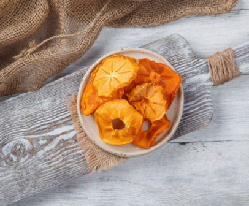

Хурма сушеная
Описание товара
Сушеная хурма,она мягкая,кожура нежная и у нее очень приятный аромат. А на вкус сладкая! И совершенно не вяжет.
Добавить в корзинуХарактеристика товара
| Вид сушки: | Естественная |
| Мин. вес для заказа: | 300 гр. |
| Производство: | Армения |
| Вид упаковки: | Вакуумная |
| ЦЕНА за 1 кг: | 1100 руб. |
Подробное описание товара
Сушёная хурма – это традиционное блюдо в странах Восточной Азии (особенно в Японии и Китае).
Она также называется шипинг и хошигаки. Её употребляют в чистом виде, а также используют для приготовления десертов. Благодаря обилию ценных веществ в составе, сушёная хурма обладает ощутимой пользой для организма. Она способна улучшить здоровье сердца и сосудов, головного мозга и пищеварительной системы, а также облегчить течение сахарного диабета II типа и даже предупредить появление злокачественных опухолей.
Из-за невысокой калорийности продукт употребляют те, кто борется с лишним весом: заменяют сухофруктами из хурмы конфеты, мучные изделия, высококалорийные десерты. Большое количество полезных углеводов – более 15 грамм в 100 граммах ягоды – заряжают энергией.
Условия хранения
Хранить в сухом прохладном месте при температуре +5 до +20 С и относительной влажности воздуха не более 70%